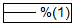
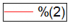
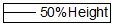
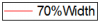
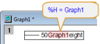
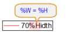
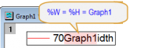

テキストオブジェクトには、名前を名付けることが可能です。これにより、実行中の組込み、あるいはユーザ定義のスクリプトから、この名前を参照することができます。 名前の付けられていないオブジェクトは、｢ オブジェクトのプログラム制御｣ダイアログボックス中のスクリプトを除き、どのようなスクリプトとも関係を持つことはできません。 テキストボックスに名前を付けるには、オブジェクト名テキストボックスに希望する名前を入力します。
|
注意！軸のタイトルや凡例のオブジェクトには、既に名前が与えられています。 これらの名前は決して変更しないで下さい。これらの名前が変更されると、システムが参照を失うため、そのオブジェクトを更新するメニューコマンドが働かなくなる、複製が間違って作成される、更新で二重書きされる、などの異常動作が生じます。 凡例を書き換えたい場合の事例についてはこちらをご参照ください。： 凡例をカスタマイズした後、カスタマイズが上書きされないようにしたい |
レイヤ操作と軸の再スケールによるラベルの大きさと位置への影響を制御するには、以下のいずれかのラジオボタンを選択します。
ページ オブジェクトがページに接続されると、オブジェクトの位置と大きさの設定は、レイヤから独立して行なわれます。 オブジェクトの位置や大きさは、レイヤが移動されたり、サイズ変更されても、また、軸スケールが変更されても、影響を受けません。 ただし、オブジェクトもレイヤに所属していますので、レイヤが削除されるとオブジェクトも消滅します。
レイヤ枠 オブジェクトがレイヤ枠に接続されると、オブジェクトはレイヤに従って位置付けられます。 レイヤを移動すると、オブジェクトもレイヤと一緒に移動します。 レイヤのサイズを変更すると、オブジェクトもレイヤの大きさに比例してサイズが変更されます。 ただし、軸を再スケールしても、オブジェクトの大きさや位置は変化しません。
レイヤとスケール オブジェクトがレイヤとスケールの両方に接続されると、オブジェクトは、その大きさと位置の両方に関してレイヤに関連付けされます。 レイヤを移動すると、オブジェクトもレイヤと共に移動します。 レイヤのサイズを変更すると、オブジェクトもレイヤの大きさに比例してサイズが変更されます。 また、軸を再スケールしても、オブジェクトの大きさは変化しませんが、同じXY座標となるよう移動します。
このドロップダウンリストはテキストラベルのダイアログのラベルコントロールの時のみ利用できます。 このオプションを選択して、テキストラベルに表示されるテキスト内の変数やデータが決定されるか指定します。 Originによりオブジェクトが再描画される度に、データや変数の変更を反映するようにテキストラベルの内容が更新されます。
サンプル計算式を参照したワークブックのロングネームのスクリーンショットをご覧ください。
| オプション | アクション | 例: %(1) | 例: %(2) |
|---|---|---|---|
| 0 | リンクなし |  |  |
| 1 | リンクに置換文字が現れます |  |  |
| 2 | 1番目のレベルのみリンクします |  |  |
| 3 | 2番目のレベルのみリンクします |  |
ドロップダウンリストを使用するには、テキストラベルは正しく参照できるよう表記法に従わなくてはなりません。 標準的な表記法は、テキストラベルを、データと変数にリンクに載っています。
この可視チェックボックスが選択されていると、そのラベルと関連したテキストは表示され、ダブルクリックによる｢テキスト制御｣/｢形状制御｣ダイアログボックスや、ALTキー+ダブルクリックによる｢オブジェクト制御｣ダイアログボックスのアクセスが可能です。ラベルを移動したり、大きさを変更することもできます。
逆に、この『可視』チェックボックスが選択されていないと、そのオブジェクトは非表示となり、ダブルクリックや、ALTキー+ダブルクリックでオブジェクトを制御するための各種ダイアログボックスのアクセスは不可能となります。オブジェクトを表示したり編集するには、編集: 編集モードを選択して、システムをボタン編集モードにします。オブジェクトを編集し終わった後は、再度、編集: 編集モードを選択してボタン編集モードを終了します。
『選択可能』チェックボックスが選択されていない場合、オブジェクトの選択や移動は全てできません。 このオプションは、オブジェクトをページやレイヤの背景として表示させるのに役立ちます。 『選択不可』となっている場合、ALTキー+ダブルクリックのショートカットを使用してこのダイアログボックスを編集することはできません。 ただし、ボタン編集モード(編集: 編集モードに入るか、オブジェクトをクリックして選択し、フォーマット: オブジェクトプ制御を選択することにより可能です。
描画オブジェクトにのみ利用できます。リアルタイムで作図イベントが発生する時、オブジェクトをそれに合わせて常に更新するには、この『リアルタイム』チェックボックスを選択してください。
このドロップダウンリストから選択されるオプションは、スクリプトを実行する状況(イベント)を指定するものです。 このドロップダウンリストの下にあるテキストボックスに実行するスクリプトを入力します。
| オプション | スクリプトの実行 |
|---|---|
| なし | スクリプトは実行されせん。 |
| ボタンアップ | ボタンがクリックされた時にスクリプトが実行されます。 |
| 移動 | ボタンを移動すると、スクリプトが実行されます。 |
| サイズ変更 | ボタンのサイズが変更されると、スクリプトが実行されます。 |
| 移動/サイズ変更 | ボタンを移動するか、そのサイズが変更されると、スクリプトが実行されます。 |
| 再描画 | ボタンが再描画されると、スクリプトが実行されます。 |
| リアルタイム | リアルタイムイベントが起こった時に、スクリプトが実行されます。リアルタイムイベントは、通常、DDEデータ転送や、データ収集モジュールを通じて発生します。 |
| ウィンドウオープン | ボタンが含まれるウィンドウを開いた時、スクリプトが実行されます。 |
| ウィンドウクローズ | ボタンが含まれるウィンドウを閉じた時、スクリプトが実行されます。 |
| ウィンドウアクティブ | ボタンが含まれるウィンドウがアクティブになった時、スクリプトが実行されます。 |
| ウィンドウ非アクティブ | ボタンが含まれるウィンドウがアクティブでなくなった時、スクリプトが実行されます。 |
| 新規選択 | 選択されていなかったボタン(当該ボタンかどうかに関らず) がクリックされると、スクリプトが実行されます。 |
| 保存前 | プロジェクトが保存される直前に、スクリプトが実行されます。 |
| 軸の再スケール | グラフ軸が再スケールされると、スクリプトが実行されます。 |
| 全イベント | 上記のいずれのイベントが起きても、スクリプトが実行されます。 |
| マスクの変更 | マスキングするデータを変更するスクリプトを実行します。 |
| データの変更 | 更新するデータを変更するスクリプトを実行します。 |
オブジェクトとスクリプトを結びつけるには、このテキストボックスに、実行させたいスクリプトを直接キー入力するか、スクリプトウィンドウやその他のテキストエディタ等からコピーして貼り付けます。
たとえば、ボックスにLabTalkまたはPythonスクリプトを入力し、これらのトリガーのいずれかを使用してスクリプトを実行できます。